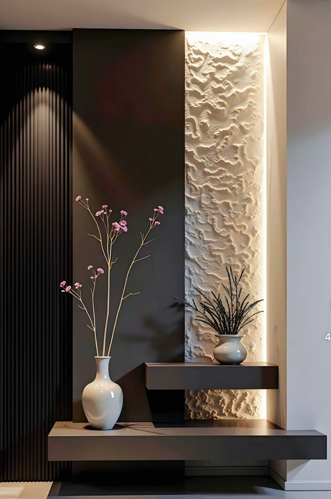

About Armani.
Armani Interiors is a Cape Town interior-design studio focused on refined spaces, architectural finishes and considered visual direction.

Luxury is not a look. It is a level of attention.
Armani Interiors approaches each environment as a complete composition. Architecture, furniture, colour, lighting and surface treatments are considered together so that the room feels coherent rather than decorated in pieces.
Our visual language leans toward sophisticated neutrals, tactile materials, strong architectural lines and warm metallic accents. The result is contemporary, personal and built around the character of each space.
Quietly distinctive.
Armani is not tied to a single aesthetic. The common thread is restraint, quality and a deliberate relationship between materials and space.
Material first
Stone, timber, panels, fabrics and metal finishes are treated as architectural ingredients, not afterthoughts.
Human scale
Beauty is balanced with movement, comfort, storage, lighting and the everyday realities of how a room is used.
Tailored atmosphere
From calm residential warmth to confident corporate interiors, the visual direction changes with the brief.
Execution aware
Design decisions are made with installation, durability and finish quality in mind.

Rooted in place.
Cape Town gives the studio a rich palette to work with: mineral stone, coastal light, timber, textured plaster and a relaxed relationship between inside and outside.
Outdoor living, terraces, ocean-facing spaces and architectural exteriors can be treated as part of the same design story.